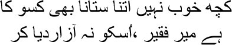
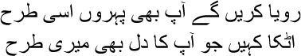
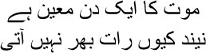
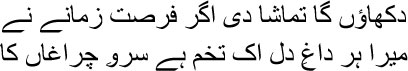
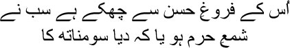

27

Is it right to cause a person such pain?
Mir is already destitute, don’t hurt him more
ust consider the writ of destiny. I went to Calcutta with the intention of returning with a bagful of money. I came back instead with the tattered pouch of a pauper. I was reminded of a Sufi tale, Manto bhai. It was stories like these that kept me alive, or else I would have given up long ago. One day a Sufi saint told his disciples, no matter how much you try to help a man, there’s always something within him that prevents him from meeting his goals. Many of his followers did not accept this. A few days later, he told one of his disciples, take a sack of gold coins to the bridge over the river and leave it there. To another, he said, search the town for a person overburdened with debt. Bring him to the bridge and tell him to cross it. Then observe what happens. The disciples followed his instructions. As soon as the man chosen to cross the bridge arrived on the opposite bank, the saint asked, ‘What did you see in the middle of the bridge?’
— Why, nothing at all.
— You didn’t see anything?
— No.
— How can that be possible? One of the disciples asked.
— When I was crossing the bridge I wondered what it would be like to walk with my eyes shut. Would I still make it across the bridge? I did.
The saint smiled at his followers.
This story haunted me on my way back from Calcutta. There were plenty of gold coins scattered along the road, Ghalib, but on a whim you travelled with your eyes shut. So you got nothing. When I thought about it afterwards, I realized that my life could not have turned out any other way. I made a string of mistakes. I could never quite grasp the rules of worldly living. Things inevitably turned out differently from the way I imagined them. I wonder why, Manto bhai. It wasn’t as though I was oblivious to reality, I did travel all the way to Calcutta to secure my pension, didn’t I? I did things for people who needed help. I annoyed the people whom it was fun to annoy. But still I ended up like that man, crossing the bridge with my eyes closed because of a whim.
In fact, that was why it took me so long to get a place at the royal court in Dilli. You couldn’t call it a place, really. I barely held on to it. I didn’t understand court machinations, and then the era of the white men was about to begin. All told, Manto bhai, it was a mess. Politics seemed beyond an idiot like me. I would probably have grasped some of it had I tried, but I didn’t bother. Zauq was on top of all this. Which is why Jahanpanah Bahadur Shah couldn’t bear to let him out of his sight. But how many of Zauq sahib’s shers do you remember today? One man cannot do two jobs, Manto bhai. Politics and poetry belong to two different worlds. If you want victory in one of them, you have no choice but to face defeat in the other. I could not score a victory in the world of politics. Zauq sahib would smile every time he saw me. I would say in my head, all right mian, smile some more, but while you dance to the tune of the court, poetry is deserting you, and you’re not even aware of it. One day, Zauq sahib asked me in jest, ‘Why can’t people understand your shers, Mirza? Why do you make them so difficult?’
With a smile I answered, ‘Your heart has not turned to stone, has it?’
— Meaning?
Instead of answering, I recited a sher of Momin sahib’s:

You will weep too every hour, just like me
If your heart is trapped, just like me
The more I became embroiled with the Dilli durbar, the more I realized that politics and poetry could never be friends. Our Bahadur Shah Zafar wrote thousands of shers, all of it rubbish, garbage. And because I was his servant I had to correct all of them. For some time I banked on the British with the hope that they would bring about a change. But after 1857, I realized that it was all a power game. And a poet must keep himself away from this jockeying for power, Manto bhai, or else, take it from me, poetry will desert him. He can spout eloquently in court, he can air his opinion on numerous subjects, it’s all … all meaningless. What we wanted from a poet was poetry. But what did he give us instead? Encomiums for Emperor Bahadur Shah Zafar. What more were poets like Zauq sahib, who had sold out to one political power or another, capable of giving anyway? Their market price had been decided in advance. Honestly, Manto bhai, I would have delivered a mighty kick on the posterior of that Zauq if I could have. Such a betrayal of the ghazal! Once you’ve entered politics, you won’t even know when treachery seeps into your blood and spreads through it. Politics is actually a game of changing your mask. There was no lustre to Bahadur Shah Zafar’s court, for everyone had sold out. But still I saw many conspiracies and cases of backstabbing.
Badshah Akbar Shah, that is to say, Akbar Shah II, was on the throne. Yes, it must have been around 1843. I got my first opportunity to be present at the royal court. Zafar, or Bahadur Shah, was to become the next emperor, but I knew that Akbar Shah wanted another son of his, Saleem, as his successor. He was even conducting negotiations with the British about this. I thought I would have to support Saleem, for Zafar had admitted Zauq to his inner fold by then. In a qaseeda written for Akbar Shah, I sang praises to Saleem; this was the method for securing proximity to kings and emperors. But reality turned out differently. The British did not accept Saleem; Akbar Shah died three years later, and Zafar ascended the throne under the name of Bahadur Shah. You can imagine my situation. I was unceremoniously rejected by Bahadur Shah. I wrote several qaseedas addressed to him, but I neither won his approval, nor found my way to his court. He did accommodate me in his court afterwards on the recommendations made by Kale sahib and Ahsanullah Khan, but as far as he was concerned I was a thorn in his flesh.
Whims are terribly dangerous things; anyone who is at the mercy of whims is certain to find his life overstepping the squares on the chessboard. And then there was my blind belief that Mughal blood coursed through my veins, that no one since Amir Khusrau had written Farsi ghazals the way I could. I refused to acknowledge that blood counted for nothing without money; if you were poor, people would trample all over your ghazals. I could have got a job to teach at the Dilli College. They needed a professor of Farsi. Thompson sahib, secretary to the Indian government, had come to interview candidates. The poet Momin Khan, Maulvi Imam Baksh, and I had been recommended for the post. I was the first to be sent for by Thompson sahib. I took a palanquin to his house, sent word that I had arrived and waited outside. Why should I enter unless he escorted me in personally? If a Mirza arrives at your door, etiquette demands that you escort him in yourself. The Englishman appeared after a long time. ‘Why are you waiting outside?’ he asked.
I informed him of the protocol of welcoming a Mirza. ‘When you appear at the governor’s court you will certainly be welcomed suitably,’ he laughed. ‘But you’re here for a job now, Mirza.’
‘It is for additional respect that I have determined to enlist for a government job,’ I told him. ‘Instead, I see that whatever little respect I command now will no longer be mine.’
— There is nothing I can do about it, Mirza.
— Then you will have to excuse me. I shall not accept this job.
I did not give him a second glance and got into my palanquin. The job would have improved my situation. Umrao Begum would have had a smile on her face. But the Lord had planned a different game for my life.
Shahjahanabad turned into a jail for me after my return from Calcutta. I was in debt to the tune of forty thousand rupees. I had no idea how to repay it. Alone in my room, I tore my hair out in despair. Whenever I went out my creditors pounced on me. ‘What happened to all your promises before you left for Calcutta, mian?’
‘Give me some more time,’ I had to mumble. ‘Something will be settled soon. My case is in the High Court now.’
But I knew very well that nothing would ensue. The report sent to the High Court was like the Negro’s mop of curls, like the blood shed by the lover’s heart, like the death sentence being read out on the execution ground.
Creditors on one side, Shamsuddin’s entourage of flatterers on the other. With rolling eyes and sly smiles they would ask me, ‘Tell us what happened in Calcutta, mian.’ They were aware of all that had taken place. But people love rubbing salt in others’ wounds. I became an object of laughter for them. I no longer wanted to leave the house. Alone in my diwankhana, I wrote a string of letters to Nasikh sahib and Mir Azam Ali and Hakir. It was like conversing with them. I had no one else to talk to either at home or in Shahjahanabad. All my conversations were with people far away. Gradually I realized that I had no country of my own in this world, I had been sent here in exile.
Umrao Begum appeared unexpectedly in the diwankhana one afternoon. I was drafting a new ghazal in my head and knotting a strip of cloth. You don’t know this business of putting knots on cloth, do you? It was an old habit of mine. No one knew when or how a ghazal would suddenly pop up in my head. It was not my practice to settle down with paper and quill. So I would draft a new ghazal and put knots in a length of cloth. Each knot represented a new sher. Eventually I would ask someone to write it all down. As I undid each knot, the corresponding sher would emerge. I didn’t have many requirements, Manto bhai. I had never thought of having my own house; I had no regrets for not having any savings either. All I had wanted was that the family could live well, eat well, that I could get the drink of my choice every evening. I never even bought a book in my life—I borrowed them all. I had no books at home, Manto bhai. What use were they? What had the lord given us the book of our hearts for?
I’ve been digressing again. Yes, Umrao Begum came to me one afternoon. A particular sher was whirling around in my head.

I really was in such a frame of mind then. It felt all the time as though only death could free me from such humiliation and disgrace. But death would not come simply because I wanted it to—it would come when it was time to. But why did sleep elude my eyes all night? It was like sitting before my own grave. I had no option but to imprison myself at home. Creditors surrounded me the instant I stepped out. Sometimes they invaded my house too. Then two of them lodged a complaint in court. The sentence was pronounced—either pay five thousand rupees, or go to jail. Where would I get five thousand rupees? So I stopped going out altogether. There was an unwritten law for aristocrats in Shahjahanabad. Even if there was a warrant for arrest, no one was arrested in his own home. So I had to accept incarceration at home. My friends didn’t pay me visits either. This was what was probably called an infidel’s life, Manto bhai. But my agony was twice as much as that of the infidel’s who spends a hundred years in hell. Urfi’s poetry came to mind all the time. The bitter aroma of the poison that destiny had poured into my cup burnt my heart to ashes, making it swing between hope and despair.
‘I’m told you don’t leave the house at all, Mirza sahib,’ said Begum.
‘Do you actually keep track of my life, Begum?’ I asked with a smile.
— Can’t you ever speak without sarcasm?
— Why should I be sarcastic? You live in the mosque, how can news of the infidel reach you?
— I am probably the greatest enemy of your life, am I not?
— Why do you say that? Don’t you get a joke? Sit down, Begum. I told her the entire story.
— But how will you survive like this, Mirza sahib?
— I am surviving, Begum.
— No, people go mad if they have to live this way. Why do your friends not visit you?
— Who are these friends? I have just one. Death. I have no idea when he will visit.
— Ya Allah! Why do you talk of death?
— What else can I ask for from life? I lead a life without purpose. I don’t see a design. There was supposed to have been a design. For quite some time now I’ve been thinking of Shamsuddin Tabrizi, Maula Rumi’s guide. Shamsuddin sahib was a young man then. He couldn’t sleep for days on end; he lost his appetite. His family kept asking him, what’s the matter, Muhammad … yes, his real name was Muhammad Malekdad … why can’t you sleep, why don’t you eat? Shamsuddin sahib answered, ‘Allah created me from the dust. Why doesn’t he talk to me? Why should I eat or sleep then? I want to learn from him why I was created, when I came here, where I will go next. Only if he answers me will I be able to eat and sleep again.’ If only I could see the design of my life, Begum.
— Then why do you make fun of me, Mirza sahib?
— I don’t make fun of you, Begum. But our paths are different. Your Allah lives in the mosque, you read the namaz five times a day for him. Maulvis and mullahs show you the way. And my lord lives in the dargah, where Maula Rumi sings and dances the Sama. My way is not for you, Begum; I seek the lord through pleasure and celebration.
— So do I, Mirza sahib. But you don’t even talk to me. Umrao burst into tears as she spoke. For the first time, Manto bhai, it occurred to me that she too had been imprisoned for a long time. If only I could have extended my hand towards her even once. But I could not. Once you’ve been misdirected, Manto bhai, how long does it take to be pure again?
Umrao Begum went off to the mahalsarai. And instantly I put a knot in the cloth.

Listen to me, Begum, this is for you:
If I get the opportunity I will show you that
each of the wounds in my heart is a seed that has sprouted
I did have one friend during my days as a prisoner—my ghazals. I asked this deep secret, this melody, tell me why my destiny has condemned me to lifelong imprisonment. Do you know what it said in reply? Do you consider yourself a crow that will be trapped in a net only to be set free? You’ve been locked up in a cage because you’re a nightingale; you will sing for many unborn generations. How well we create mirages for ourselves! No words can express Ghalib’s failure, Manto bhai. My house is sunk in darkness. I am nothing but an extinguished candle. I am too ashamed to look at my own darkened face.
The days were passing in this fashion. I could not keep track of time. It felt as though I had been imprisoned in this room since birth. My only conversations were with Kallu now and then. When he brought my drink in the evening, Kallu would sit with me for some time. He had only one addiction—stories. He didn’t speak, only waiting with wide eyes for me to talk. Once I did, he would plead for a story. I never saw such a strange man, my brothers. He didn’t say a word when the story ended. Who wants to tell stories every day? But I would tell him stories sometimes. How would Kallu live without his stories? I told him an interesting story about love once. I’ll tell you too, you’ll enjoy it as well, my brothers. How long can you listen to stories from Ghalib’s shroud-covered life?
This is a story about a beautiful woman. Her name was Jahanara. What was her beauty like? As Mir sahib wrote in a sher:

Everything’s indebted to the brightness of her beauty
Whether it’s the flame at Kaba or the lamp at Somnath
Three young men came to the nawab’s court with the intention of marrying Jahanara. All three were well-matched; the nawab could not decide whom to give his daughter in marriage to. Eventually he left the choice to her. Such was the Lord’s desire. The months rolled by, but Jahanara could not make up her mind. She could not get married for a sudden illness claimed her life. The three young men laid her in her grave together. The first one remained at the graveyard. All he could think about was the twist of destiny that had snatched his beloved so soon from this world.
The second young man became a wandering fakir. He wanted to find out the reason for the death of the woman he had loved. And the third young man stayed back with the nawab to console him.
The one who became a fakir arrived at an unknown land. He heard that an extraordinary man lived here, capable of miracles. The young fakir arrived at his house. When they sat down to dinner that night, the grandson of the wise man began to cry. At once the wise man rose and flung the boy into the fire.
‘What have you done?’ shrieked the young fakir. ‘I have seen many sins and horrors in this world, but can anyone commit such a dastardly act?’
Smiling, the wise man said, ‘Don’t be distraught. Even ordinary events seem unusual without proper knowledge.’ He recited an incantation, whereupon the child walked out of the fire.
The young fakir memorized the incantation. He returned to his own land after some time. As soon as he recited the incantation at the grave of his beloved, Jahanara appeared before him. The nawab launched a nationwide celebration when his daughter returned. The three young men came once more to marry Jahanara. Do you know whom Jahanara chose? She chose her lover. Do you know who her lover was, Manto bhai?
Why are you staring at me that way? I cannot acknowledge you as a writer unless you can tell me the answer.
Yes, you’re right! I knew you could do it. The young fakir gave Jahanara her life—it was humane behaviour on his part. The third young man comforted the nawab like his own son. But only the first … yes, he was the only lover, who had remained by the beautiful woman’s grave all this while. Even death had not been able to push him away.
The days were passing in this fashion. Suddenly I heard that Fraser sahib, the Resident of Dilli, had been murdered. Ya Allah!